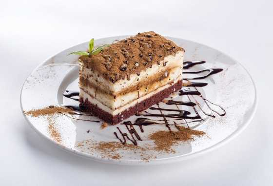

お店のこと
kashizukiは、石川県能美市中町にある「小さな小さなお菓子屋さん」。Instagramのプロフィールでは、1人で製造・販売していると紹介されています。
定休日は日曜・月曜・祝日とのことです。店名の意味や、お店を始めたきっかけは確認できていないため、ここでは触れていません。
お菓子
お品書き・価格は準備中です。最新の様子はInstagramでご確認ください。





※掲載写真はフリー素材のイメージで、店舗の実際の商品・様子ではありません。
お客様の声
イメージ例ひとりで丁寧に作っているお店と知って、買うのが楽しみになりました。
イメージ例こぢんまりとした店構えで、気軽に立ち寄れるのがうれしいです。
イメージ例手みやげに選びました。お菓子を選ぶ時間もいいものですね。
※上記は制作側の創作によるイメージで、実在のお客様の声ではありません。
アクセス
- 住所
- 〒929-0123 石川県能美市中町未40-1
- 電話
- 準備中
- 営業時間
- 準備中(Instagramには「10時」の記載あり)
- 定休日
- 日・月・祝(Instagramの記載による)
- @okashiya_kashizuki
写真クレジット
- 皿にのったチョコレートケーキ:「Piece of chocolate cake on a white plate decorated with chocolate sauce」 Daria Yakovleva / CC0 1.0
- マドレーヌ:「Madeleines de Commercy」 Bernard Leprêtre / CC BY-SA 2.5
- フィナンシェ:「Two rectangular financiers」 Kikaineko / CC BY-SA 3.0
- コーヒーとコーヒーケーキ:「Coffee and coffee cake (Unsplash)」 Stephanie McCabe / CC0 1.0
- ショートケーキ:「Shortcake slice 2」 Shisma / CC BY 4.0
- チョコレートケーキ:「Piece of chocolate cake on a white plate decorated with chocolate sauce」 Daria Yakovleva / CC0 1.0
- マカロン:「Macarons on a blue rectangular serving dish, August 2009」 Jeppestown / CC BY-SA 2.0
- カップケーキ:「Cheshire cupcakes」 Katja Seaton (Katjaskupcakes) / CC BY 3.0
- ベリーのタルト:「Tart with strawberry and blueberries」 Shisma / CC BY 4.0
- エクレア:「Eclair with a fork」 Fran1812 / CC BY-SA 4.0
- いちごのタルト:「Strawberry tart by Kirti Poddar」 Kirti Poddar / CC BY 2.0
- バタークッキー:「Danish-butter-cookies-1032894」 sdnet01 / CC0 1.0